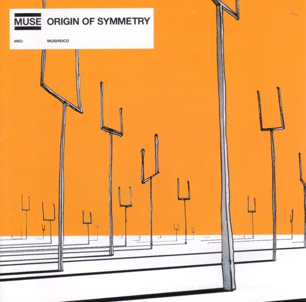
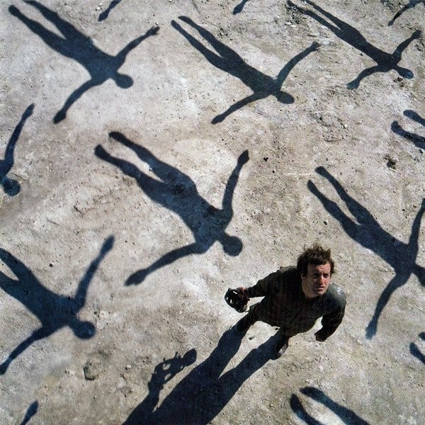
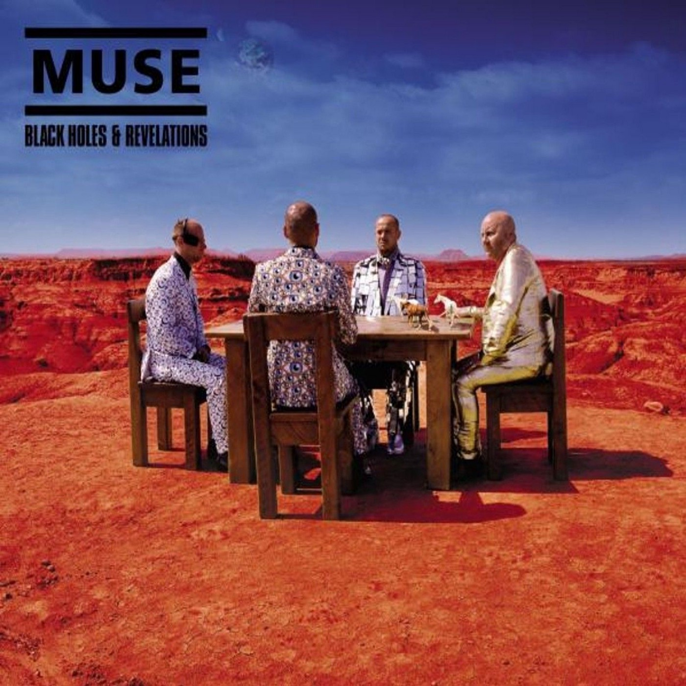
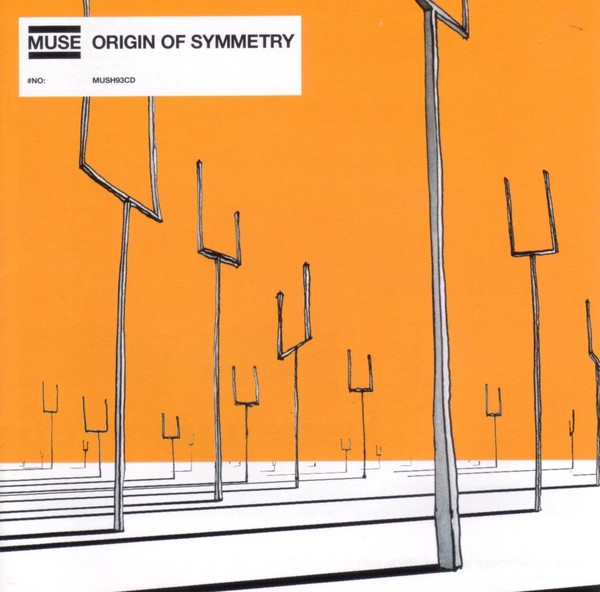
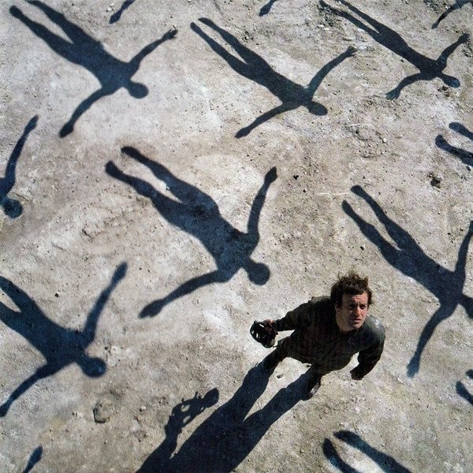
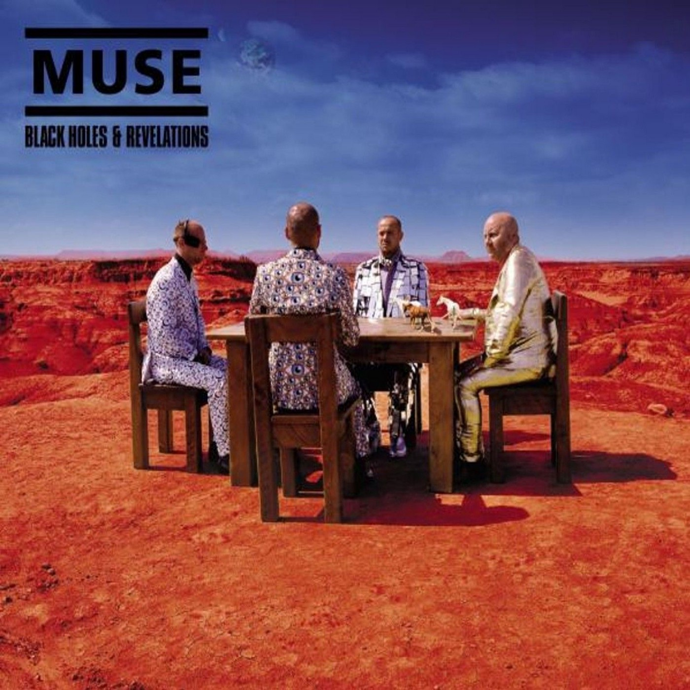
 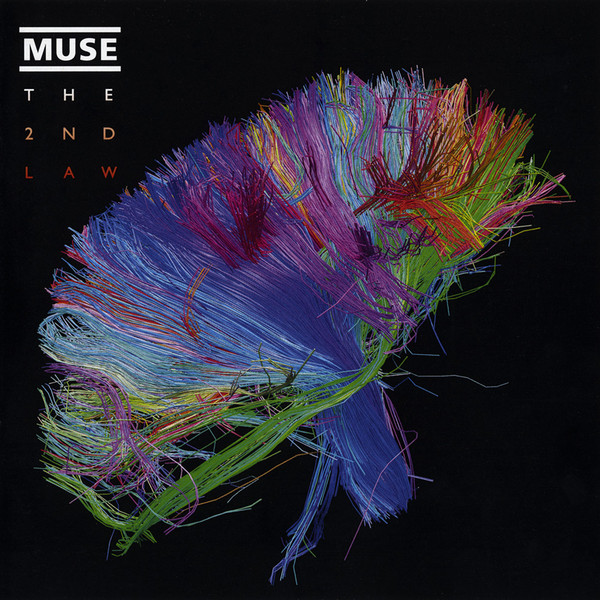
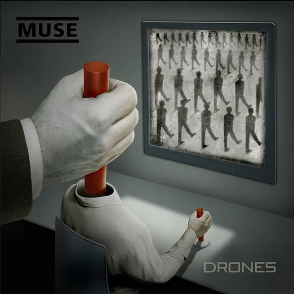
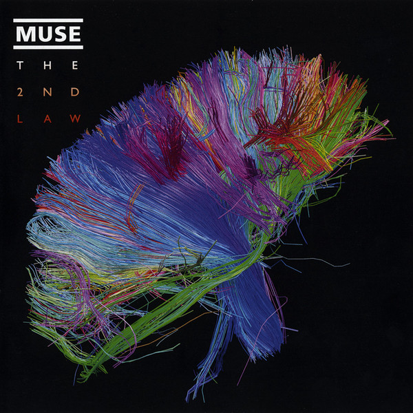
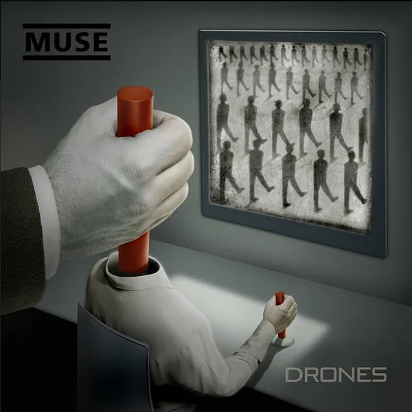
 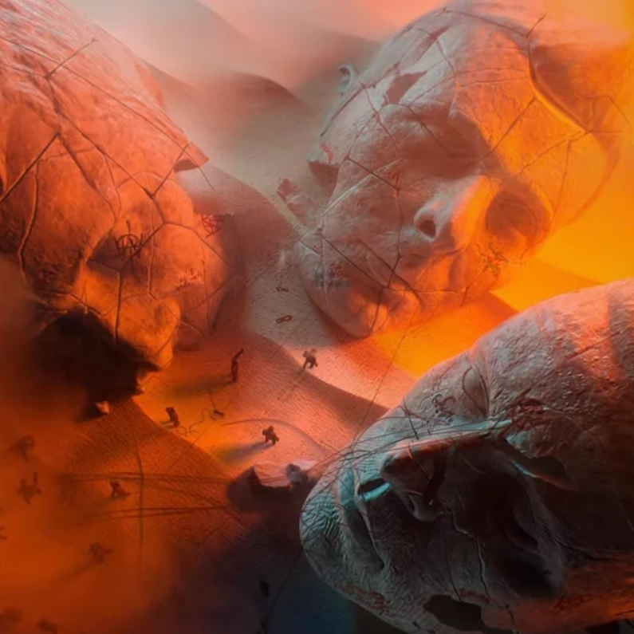
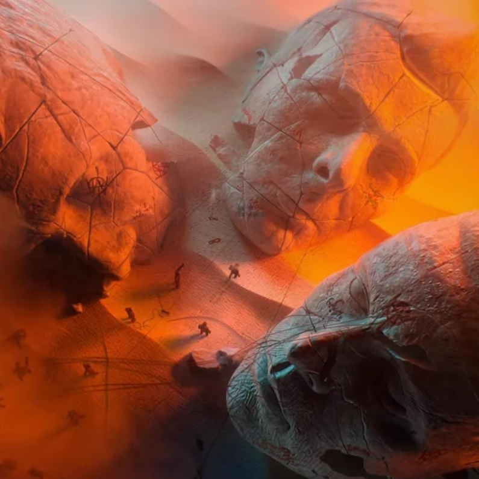
Muse are an English rock band from Teignmouth, Devon, formed in 1994. The band consists of Matt Bellamy (lead vocals, guitar, keyboards), Chris Wolstenholme (bass guitar, backing vocals), and Dominic Howard (drums). Muse released their debut album, Showbiz, in 1999, showcasing Bellamy's falsetto and a melancholic alternative rock style. Their second album, Origin of Symmetry (2001), incorporated wider instrumentation and romantic classical influences and earned them a reputation for energetic live performances.[1] Absolution (2003) saw further classical influence, with strings on tracks such as "Butterflies and Hurricanes", and was the first of seven consecutive UK number-one albums.
Black Holes and Revelations (2006) incorporated electronic and pop elements, displayed in singles such as "Supermassive Black Hole",[1] and brought Muse wider international success. The Resistance (2009) and The 2nd Law (2012) explored themes of government oppression and civil uprising and cemented Muse as one of the world's major stadium acts. Rolling Stone stated the band possessed "stadium-crushing songs".[2] Topping the US Billboard 200, their seventh album, Drones (2015), was a concept album about drone warfare and returned to a harder rock sound. Their eighth album, Simulation Theory (2018), prominently featured synthesisers and was influenced by science fiction and the simulation hypothesis.
Their ninth album, Will of the People (2022), which combined many genres and themes from their previous albums, was released in August 2022. Muse have won numerous awards, including two Grammy Awards, two Brit Awards, five MTV Europe Music Awards and eight NME Awards. In 2012 they received the Ivor Novello Award for International Achievement from the British Academy of Songwriters, Composers and Authors. As of June 2016, they have sold over 30 million albums worldwide.
The members of Muse played in separate school bands during their time at Teignmouth Community College in the early 1990s. Guitarist Matt Bellamy successfully auditioned for drummer Dominic Howard's band, Carnage Mayhem, becoming its singer and songwriter. They renamed the band Gothic Plague. They asked Chris Wolstenholme – at that time the drummer for Fixed Penalty – to join as bassist; he agreed and took up bass lessons.[4][5] The band was renamed Rocket Baby Dolls and adopted a goth-glam image. Around this time, they received a £150 grant from the Prince's Trust for equipment.[6]
In 1994, Rocket Baby Dolls won a local battle of the bands, smashing their equipment in the process.[7] Bellamy said, "It was supposed to be a protest, a statement, so, when we actually won, it was a real shock, a massive shock. After that, we started taking ourselves seriously." The band quit their jobs, changed their name to Muse, and moved away from Teignmouth.[8] The band liked that the new name was short and thought that it looked good on a poster.[9] According to journalist Mark Beaumont, the band wanted the name to reflect "the sense Matt had that he had somehow 'summoned up' this band, the way mediums could summon up inspirational spirits at times of emotional need".[10]
During the production of their second album, Origin of Symmetry (2001), Muse experimented with instrumentation such as a church organ, Mellotron, animal bones, and an expanded drum kit. There was more of Bellamy's falsetto, arpeggiated guitar, and piano playing. Bellamy cites guitar influences such as Jimi Hendrix and Tom Morello (of Rage Against the Machine), the latter evident in the more riff-based songs in Origin of Symmetry and in Bellamy's use of guitar pitch-shifting effects. The album features a cover of Anthony Newley and Leslie Bricusse's "Feeling Good",[17] voted in various polls one of the greatest cover versions of all time.[18][19][20] It was released as a double A-side single, "Hyper Music/Feeling Good".
Origin of Symmetry received positive reviews by critics; NME gave the album 9/10 and wrote: "It's amazing for such a young band to load up with a heritage that includes the darker visions of Cobain and Kafka, Mahler and The Tiger Lillies, Cronenberg and Schoenberg, and make a sexy, populist album."[21] Maverick, Muse's American label, did not consider Bellamy's vocals "radio-friendly" and asked Muse to rerecord the song for the US release. The band refused and left Maverick; the album was not released in the US until September 2005, after Muse signed to Warner Bros.[22][23]
Origin of Symmetry has made appearances on lists of the greatest rock albums of the 2000s, both poll-based and on publication lists. In 2006, it placed at number 74 on Q magazine's list of the 100 Greatest Albums of All-Time,[24] while in February 2008, the album placed at number 28 on a list of the Best British Albums of All Time determined by the magazine's readers. Kerrang! placed the album at number 20 in its 100 Best British Rock Albums Ever! List and at number 13 on its 50 Best Albums of the 21st Century list.[25] Acclaimed Music ranks Origin of Symmetry as the 1,247th greatest album of all time.[26]
Muse's third album, Absolution, produced by Rich Costey, Paul Reeve and John Cornfield was released on 15 September 2003. It debuted at number one in the UK[28] and produced Muse's first top-ten hit, "Time Is Running Out", and three top-twenty hits: "Hysteria", "Sing for Absolution" and "Butterflies and Hurricanes". Absolution was eventually certified gold in the US.[29] Muse undertook a year-long international tour in support of the album, visiting Australia, New Zealand, the United States, Canada, and France. On the 2004 US leg of the tour, Bellamy injured himself onstage during the opening show in Atlanta;[30] the tour resumed after Bellamy received stitches.[31]
In June 2004, Muse headlined the Glastonbury Festival, which they later described as "the best gig of our lives".[32][33] Howard's father, William Howard, who attended the festival to watch the band, died from a heart attack shortly after the performance. Bellamy said: "It was the biggest feeling of achievement we've ever had after coming offstage. It was almost surreal that an hour later his dad died. It was almost not believable. We spent about a week sort of just with Dom trying to support him. I think he was happy that at least his dad got to see him at probably what was the finest moment so far of the band's life."